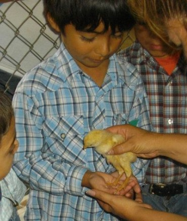
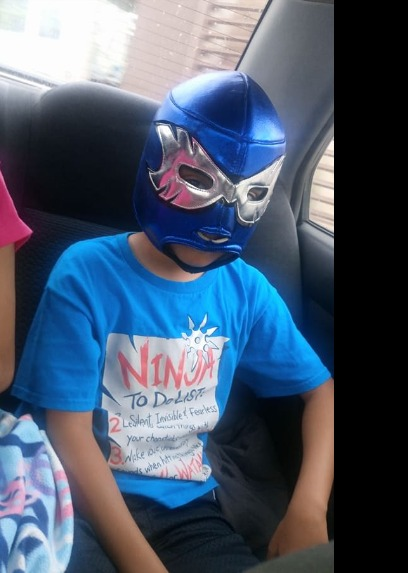
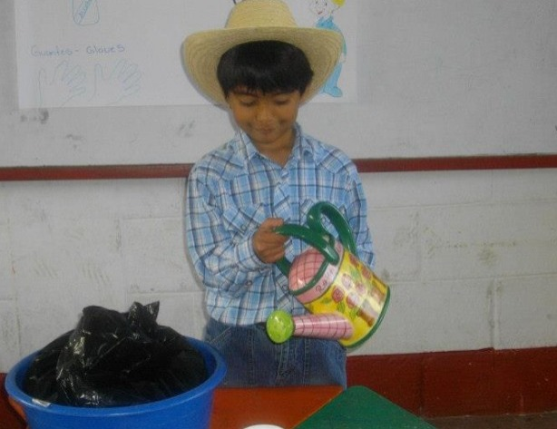

5 años
1. Comencé a tener mis primeros amigos.
2. Me caí por primera vez de mi bici.

8 años
1. Amarre mis zapatos por primera vez.
2. Aprendí que me gustaba la música.
10 años
1. El colegio ya era algo normal.
2. Leí mi primer libro.

11 años
1. Aprendí a tocar la marimba.
2. Me desarrollle más socialmente.
12 años
1. Entré a basicos.
2. No me tomaba muy enserio mis estudios.

16 años
1. Empecé a tocar la guitarra.
2. Traté de involucrarme más en la música.
3. Empecé a salir más de mi zona de confort.
4. Mi relación con mis padres mejoró.